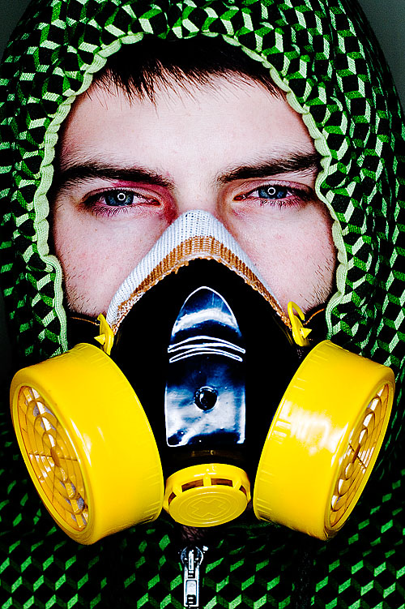
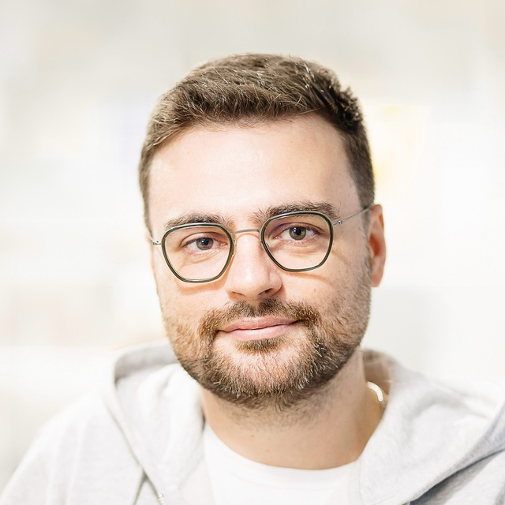
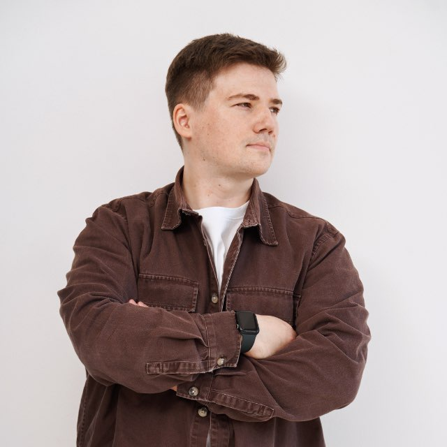
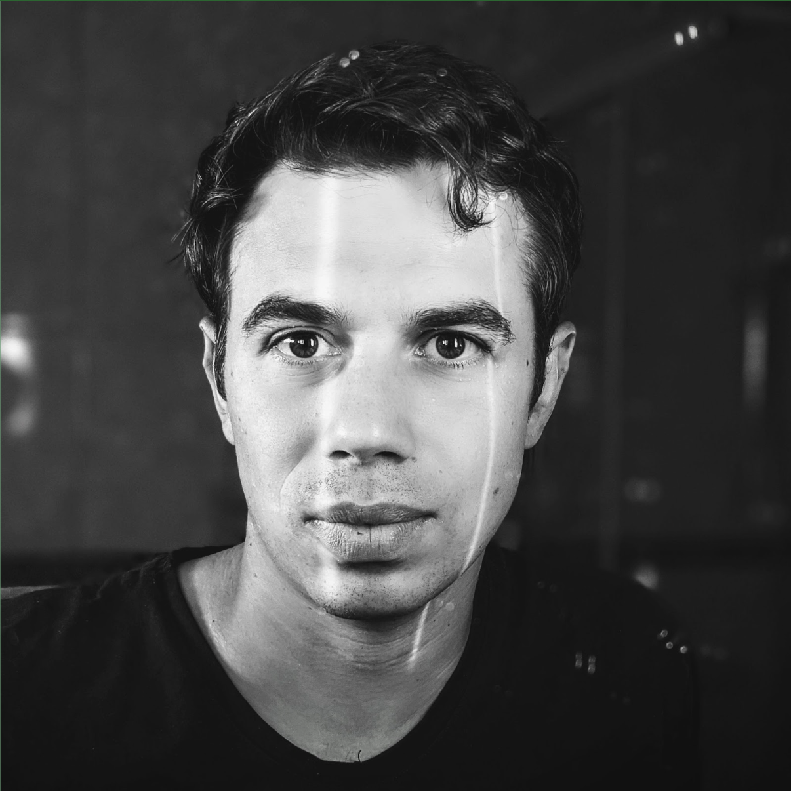

W2
30 Mar – 04 Apr 2026 · Machine Operating System
SYSTEM ABOVE
MODEL
MODEL
80% of the return comes from the harness, not the model. Five layers + governance — infrastructure, data & context, orchestration, skills, people. How to make your company machine-readable for agents.
7
sessions
1 lecture · 6 specialist workshops
7
speakers
Гершуни · Амётов · Клебан · Сидора · Ковальский · Страхов · Кравцов
~14h
material
all sessions recorded
The Five Layers + Governance
Infrastructure
MCP · RBAC · gateway
Data & Context
ontology · memory
Orchestration
4 topologies · VSM
Skills
evals · self-improve
People
roles · pods
Governance
FinOps · compliance
Key Concepts
Model ≠ System
Agent = model + harness. 80% of the return comes from the wrapper: tools, memory, evals, guardrails, orchestration.
Context Graph
A 90-min transcript = 15K tokens every query. A graph parses once, stores structurally, answers in ~5ms. Semantic + episodic + procedural memory.
MCP + AI Gateway
Single auth + policy layer. SSO, role-based access, token budgets, DLP, policy engine, full audit. 88% of orgs reported agent security incidents.
Four Agent Topologies
Sequential · parallel · chat · business-process · hybrid. Pick for the flow, not the other way around.
Generator / Discriminator
Generator → Judge agents (practical, data freshness, language, substance, completeness) → score → ship or iterate.
DGM & Hyperagents
Darwin Gödel Machine: a meta-agent improves the task agent. Hyperagent: improves how it evaluates, proposes improvements, stores knowledge.
L0 → L3 Progression
2024: 80% disengaged. 2025: 50% competent users, 20% technical builders. Tracking AI level as a people metric.
Router economics
70-80% → Haiku/Flash ($0.25/1M). 20-30% → Opus/Sonnet ($15/1M). 60× cost delta — route or lose.
Sessions
L02
Lecture 2 — System Above Model
Степан Гершуни·30 Mar 2026·~85 min
запись добавляется
Topics
- 6 layers architecture
- MCP · CLI-first · model routing
- Graph RAG vs Vector RAG
- 4 orchestration topologies · VSM
- Prompt vs skill file · eval-first
Links
W2a
AI-контент для бизнеса
Алексей Амётов·01 Apr 2026 · 12:00·~120 min
запись добавляется
Topics
- Pipeline: idea → generation → verification → publish
- Reuters: fact-checking AI output
- Look At Media · Hopes and Fears · Setka cases
- Non-slop: what separates good AI content
Links
W2b
Self-Improving Agents
Виталий Клебан·01 Apr 2026 · 18:00·~60 min
запись добавляется
Topics
- From static prompts → self-improving loops
- Feedback loops: agent evaluates its own output
- Live demo: real cyber.Fund system
- Applied to investment / deep tech research
Links
W2c
Технический коворкинг
Глеб Сидора·02 Apr 2026 · 12:00·~120 min
запись добавляется
Topics
- ML office hours
- Unblocking technical stucks
- Graph knowledge · data infra questions
Links
W2d
AI-Driven Development: Live Build
Валерий Ковальский·02 Apr 2026 · 18:00·~120 min
запись добавляется
Topics
- AI-driven workflow for developers
- Live build from zero
- Harness choices · tool selection
Links
W2e
Agent Teams
George Strakhov·03 Apr 2026 · 12:00·~120 min
запись добавляется
Topics
- How to build agent teams
- Roles, handoffs, chat topologies
- From solo agents to coordinated pods
Links
W2f
Data Pipelines + Knowledge Graph
Даниил Кравцов·03 Apr 2026 · 18:00·~120 min
запись добавляется
Topics
- Improvado: Philips · Havas · McCann
- 99 agents in real-time
- Enterprise → SMB adaptation
- Data pipelines + knowledge graph
Links
Speakers

Степан Гершуни
L02

Алексей Амётов
W2a

Виталий Клебан
W2b

Глеб Сидора
W2c

Валерий Ковальский
W2d

George Strakhov
W2e
Даниил Кравцов
W2f
Resources
Quotes
«Я могу себе представить, что в будущем каждому инженеру в нашей компании понадобится годовой токен-бюджет. Может достигать базовой зарплаты.»
— Jensen Huang, CEO NVIDIA, GTC 2026
«50% офисных сотрудников пишут код, только 20% имеют IT-образование.»
— Nicolai Tangen, CEO Norwegian Sovereign Wealth Fund
«AI Doesn't Reduce Work — It Intensifies It.»
— HBR, Feb 2026